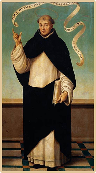

St. Vincent Ferrer
Feast Day: May 5 (1350-1419), priest
St. Vincent Ferrer dedicated his life to guiding people toward repentance and spiritual renewal. Known for his extraordinary gifts of preaching, prophecy, and speaking in tongues, he became a powerful messenger of faith and preparation for divine judgment. As the patron of the UST Institute of Information and Computing Sciences, St. Vincent Ferrer inspires the college's mission to pursue truth and excellence. His example encourages the formation of technically skilled IT professionals who embody lifelong learning, social responsibility, and leadership rooted in service.